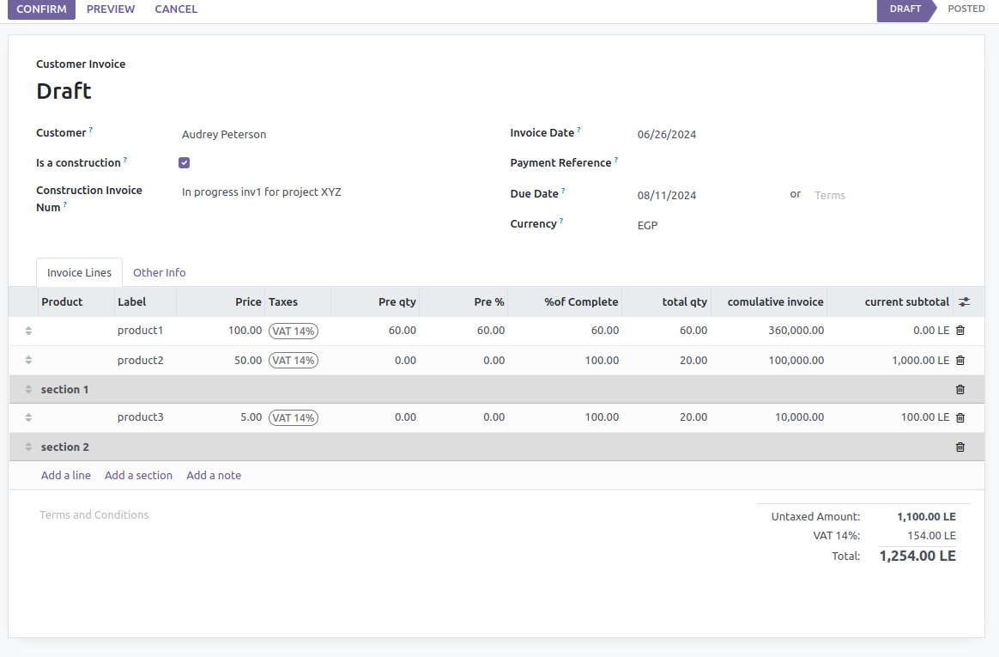
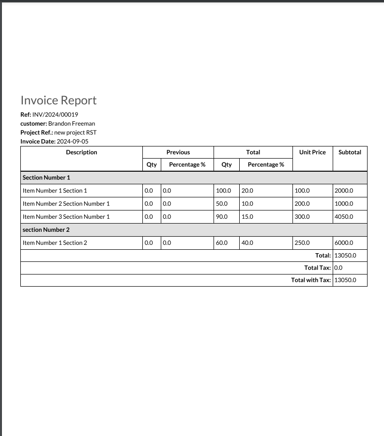

Construction Invoicing Management module is a powerful tool designed for construction companies to streamline their invoicing process. This module allows you to manage all aspects of invoicing for construction projects, from tracking costs and materials to generating detailed invoices for clients.

